Групи м’язів – анатомія та вправи
Тут ми розглянемо найголовніші м’язи людини, а також їхню анатомію. Вивчивши ці матеріали, ви зможете скласти правильну програму тренувань. Ви дізнаєтесь, як ефективно тренувати м’язи та повністю освоїте правильну техніку виконання всіх вправ у фітнесі та бодібілдингу.
1. Шия
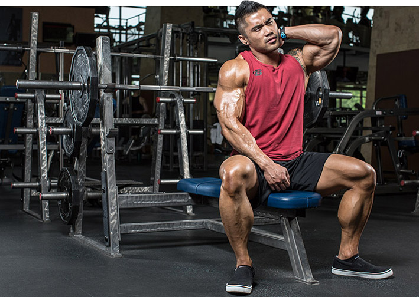
Важко переоцінити значення м’язів шийних як з естетичної, так і з точки зору користі в спорті. Для того, щоб подивитись під ноги чи вгору, убік чи просто озирнутися, завжди потрібно повернути шию. Враховуючи, що більшість має сидячу роботу за комп’ютером, тренування шиї дозволяє запобігти шийному остеохондрозу та болю. На жаль, багато бодібілдерів нехтують тренуваннями шийних м’язів, віддаючи перевагу іншим м’язовим групам. Майже всі тренувальні програми не містять вправи на шию. В результаті виходить явний дисбаланс розвитку різних м’язових груп, що негативно впливає на загальну оцінку спортсменів.
2. Плечі (дельтоподібні)
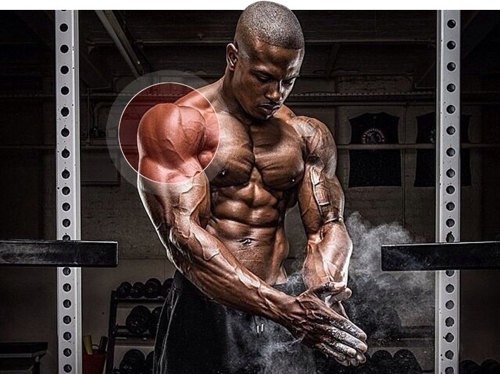
Масивні, добре розвинені плечі є візитівкою будь-якого атлета. Адже саме вони, у поєднанні з вузькою талією, створюють візуальну ілюзію потужності торсу та спортсмена загалом. Накачені дельти будуть видно як на сцені, так і у звичайному житті. Навіть у одязі, ширина ваших плечей не залишиться непоміченою. Найпростіший спосіб змінити свій зовнішній вигляд – зміцнити м’язи плечей. Розвинені плечі врівноважують стегна і візуально зменшать їх. Якщо ваша фігура формою нагадує яблуко або грушу, сильні дельтоподібні м’язи допоможуть вам виглядати пропорційно. До того ж, ця група м’язів найзатребуваніша з м’язів верхньої частини тіла, плечі працюють при будь-яких рухах.
3. Трапеція (трапецієподібний м’яз)
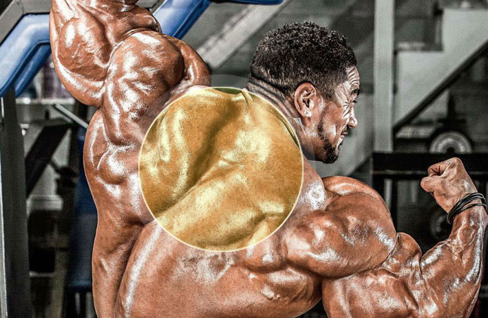
Трапецієподібний м’яз – це плоский трикутний м’яз, який розташований зовні і вниз від шиї, і вниз по центру спини між лопатками. Чим сильніше трапеції випирають з обох боків шиї, тим потужніше і видовищніше виглядатиме тіло атлета. Будівництво великих трапецій необхідне симетричного розвитку верхньої частини тіла. Тренування трапецій можна проводити як після тренування дельт, так і в окремий день для більш глибокого опрацювання. Щоб мати добре розвинені трапеції, вам потрібно приділити увагу тренуванню як верхньої, середньої, так і нижньої частини окремо.
4. Біцепс (двоголовий м’яз плеча)
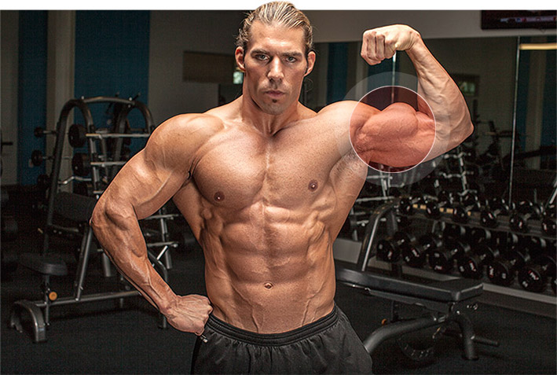
Біцепс – це великий м’яз, який добре помітний під шкірою, завдяки чому широко відомий серед людей, навіть погано знайомих з анатомією. Цей м’яз популярний серед культуристів і за допомогою регулярних тренувань можна досягти значного збільшення його обсягів. Біцепс, якщо можна так сказати, найпопулярніший м’яз, який серед простих людей і асоціюється з розвитком сили. Так як біцепс фізіологічно досить великий м’яз, тренувати його потрібно не частіше 1-2 разів на тиждень, інакше він не встигне відновитися і м’язового зростання не буде, або він буде дуже повільним.
5. Передпліччя
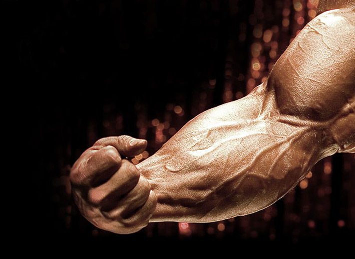
Сильні передпліччя – одна з основ тренінгу спортсмена-силовика. Слаборозвинені передпліччя не дозволять утримувати довгий час штангу або гантелі під час тренінгу спини і біцепса, обмежать вагу в жимі лежачи і т.д. Тренування передпліч є невід’ємною складовою провідних бодібілдерів. Так як передпліччя постійно задіяні як при виконанні вправ на інші групи м’язів, так і в побуті, їхня опір до навантажень досить висока. Тому вони належать до так званих «важких» м’язів та їх розвиток є досить трудомістким процесом.
6. Груди
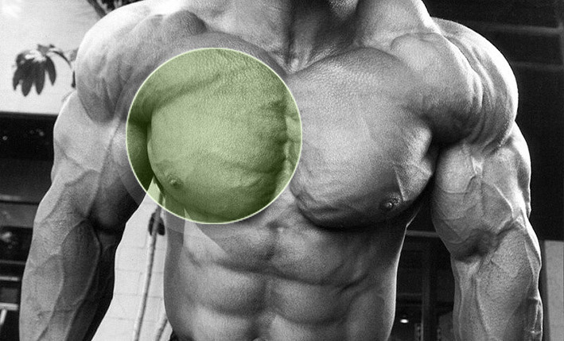
Грудні м’язи мають величезний потенціал свого розвитку як у силі, і у розмірі. Причина цього полягає в тому, що люди еволюціонували, щоб ходити на двох ногах. Коли ми пересувалися рачки, великий грудний м’яз грала найважливішу роль у цьому процесі. В даний час грудні м’язи отримують значно менше навантаження у повсякденному житті і у середньої людини знаходяться в стані атрофії. У зв’язку з цим, люди, які починають займатися нарощуванням м’язової маси своїх грудей, мають величезний потенціал у їх розвитку, і, як правило, показують значні покращення у стані грудей за короткий проміжок часу.
7. Прес
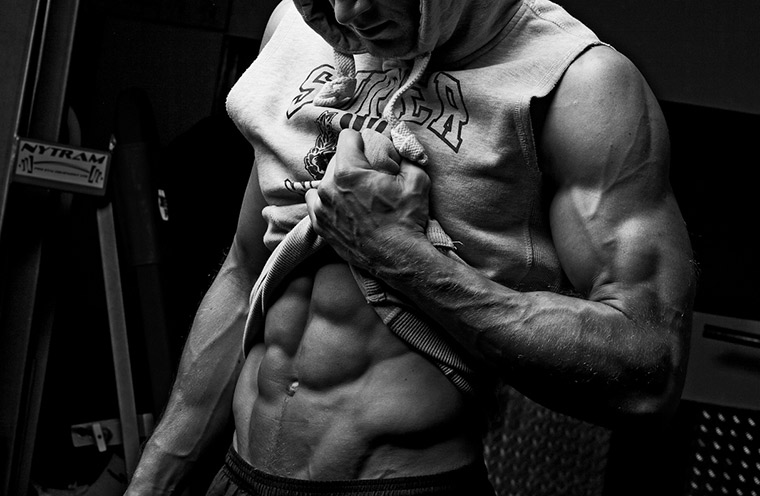
Добре розвинені м’язи черевного преса є остаточним акордом у розвитку вашого атлетичного тіла. Адже немає сумнівів у тому, що навіть тіло, яке не має видатних м’язових обсягів, але має добре накачений прес, виглядатиме дуже привабливо. У тренуванні преса те, що ви їсте і п’єте, набагато важливіше, ніж те, як ви тренуєтеся. Адже хороше промальовування м’язів живота є насамперед заслугою вмісту низького відсотка жиру в організмі, а не нескінченних тренувань. Тому насамперед перегляньте свій раціон харчування.
8. Квадрицепс (чотириголовий м’яз стегна)
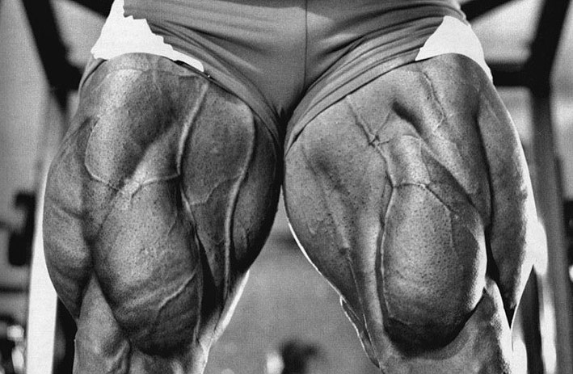
Квадрицепс (чотириголовий м’яз стегна) – найбільший м’яз ноги, що займає всю передню і частково бічну частину стегна. Складається із чотирьох м’язових масивів. Квадрицепси займають 70% м’язової маси ноги, тому саме їх розвиток є основним у тренуванні ніг. Основною вправою у розвиток квадрицепсов є присідання. Але, для новачків, спочатку тренінгу, краще почати з розгинання ніг сидячи в тренажері, жиму ногами і гіперекстензій для зміцнення нижнього відділу спини, щоб уникнути травм, щоб підготувати базу для майбутніх важких присідань. Включати присідання до свого тренувального плану варто десь за півроку після початку тренувань.
9. Трицепс (триголовий м’яз плеча)
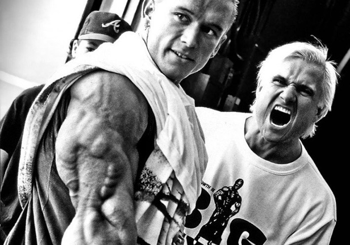
Трицепс (триголовий м’яз плеча) – це U-подібний м’яз, який розташований на тильній поверхні плеча. Звичайно, побачивши спереду вона не конкурент біцепсу з його чудовою веною, товщиною в олівець, що спускається до передпліччя і витається по ньому до самої кисті. Але хороший трицепс не порівняти за функціональністю не з одним м’язом. Навіть супер накачані біцепси не справлять грандіозного враження, якщо сусідитимуть із плоскими трицепсами. До того ж більшу частину руки займає саме трицепс. Подумайте про це коли знову накинетеся тренувати свої біцепси.
10. Найширші м’язи спини
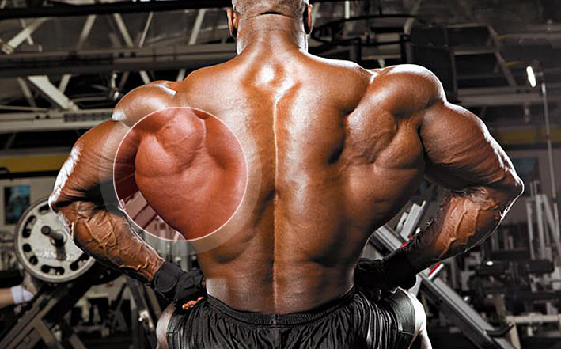
Найголовніші м’язи, які приймають левову частку формування спини він – найширші. За допомогою цих м’язів можна візуально збільшити спину та плечі, і водночас зменшити талію. Саме вони відіграють велику роль у формуванні «чоловічої» постаті, горезвісної V-подібної статури. Тому для повноцінного розвитку атлета, життєво необхідно якісно опрацьовувати найширші м’язи, для досягнення великої та красивої спини. Найширший м’яз спини грає провідну роль при плаванні, веслуванні і при ударах, що рубають. Даний м’яз розгинає плече при метанні списа, веслуванні, каякінгу, бігових лижах, скелелазіння та спортивної гімнастики. Багато видів спорту вона бере участь у комбінованих рухах (внутрішня ротація, приведення, розгинання) — спортивні дисципліни з м’ячем при кидкових рухах (гандбол, волейбол, теніс).
11. Ромбоподібні м’язи спини
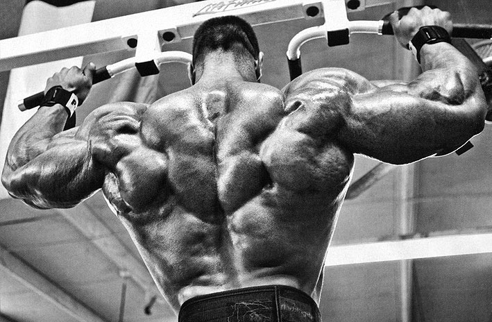
У нашому тілі існує близько 650 м’язів, але ми чомусь тренуємо не всі 650, а лише найважливіші ті, які складають основу, і в процесі яких перетворюється все тіло. Ромбоподібні саме ставляться до тих м’язів, які не потрібно цілеспрямовано тренувати, тому що вони розвиваються пасивно, при виконанні вправ на спину. Практично в кожній вправі задіяні ці м’язи, а тому не варто хвилюватися про їх розвиток — вони певною мірою самостійні.
12. Поперек
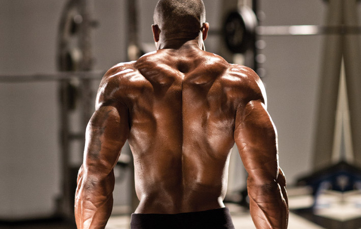
На додаток до зовнішнього вигляду, зміцнення м’язів попереку корисне для здоров’я, оскільки це одне з найслабших місць бодібілдера. За рахунок зміцнення поперекових м’язів, знижується ризик захворювання хребта: остеохондрозу, усунення хребців та утисків нервів, оскільки м’язовий каркас забезпечує надійну підтримку для хребців. М’язи попереку аналогічно м’язам живота мають велике значення у питанні про правильне функціонування таза та спини. Починаючи займатися у таких видах спорту, де використовуються обтяження, спортсмен обов’язково повинен «страхувати» своє здоров’я тренуванням поперекового відділу.
13. Сідниці (ягідні м’язи)
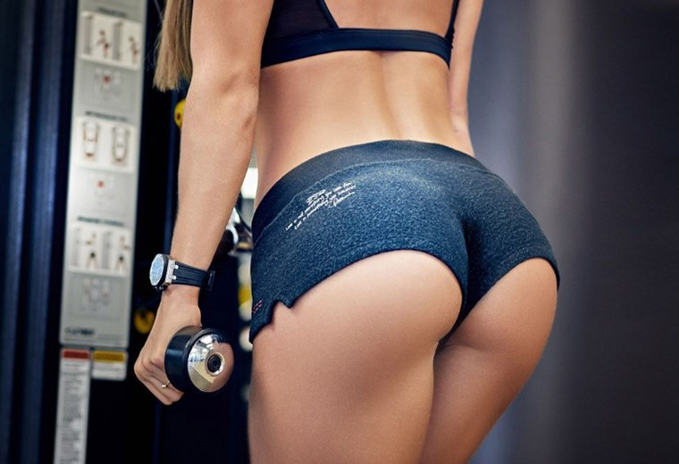
Сідниці є найбільш привабливою частиною тіла людини. Як встановили психологи, чоловіки оцінюють насамперед сідниці та груди, а дівчину інтуїтивно цікавлять ширина плечей та об’єм сідниць. За висновками вчених-антропологів, сідниці є одним із головних факторів привабливості як для чоловіків, так і для жінок, оскільки вони відображають здатність людини до бігу на великі відстані, що було важливим еволюційним фактором виживання. Форма сідниць залежить від спадковості, проте за допомогою вправ їх можна зробити більш підтягнутими, міцними та пружними. Крім того, сильні сідничні м’язи дозволять вам не тільки приголомшливо виглядати в обтягуючих джинсах, але і помітно покращити свої результати в бігу та стрибках. Для цього, крім сідничних м’язів, потрібно тренувати м’язи, що розгинають хребет, та м’язи задніх поверхонь стегон. Усі три групи працюють одночасно, тому якщо одна з них не розвинена, підвищується ризик травмування. Якщо у вас сильні м’язи задніх поверхонь стегон і попереку, то м’язи сідничні будуть працювати більш ефективно.
14. Біцепс стегна (двоголовий м’яз стегна)
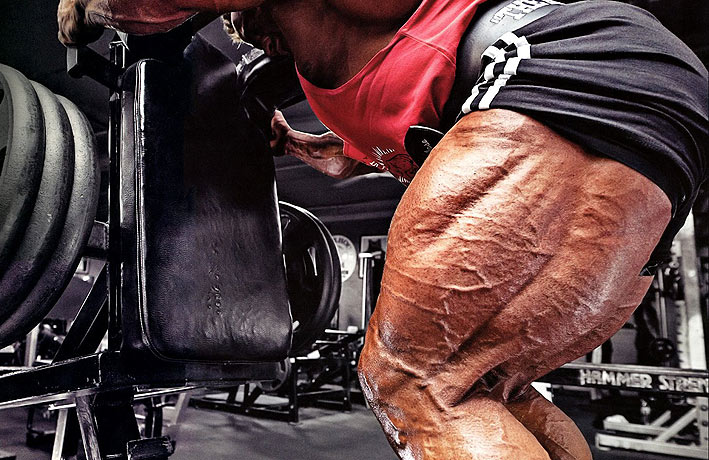
Біцепс стегна (двоголовий м’яз стегна) – відокремлена назва, що позначає не один, а відразу кілька м’язів, розташованих на задній поверхні стегна. Біцепс стегна має дві головки – довгу і коротку, які разом утворюють м’яз, що працює на згинання гомілки в колінному суглобі, повороту стегна всередину та назовні. При правильному опрацюванні цих м’язів ставати дуже добре видно загальну тренованість ніг атлета. Стегна неабияк додають в обсязі, помітно покращується їх форма. У дівчат, у свою чергу, гармонійний розвиток квадріцепсів і біцепсів стегон дозволяє їх власницям мати набагато привабливіші ноги та вражаючі стегна.
15. Гомілка (литкова, камбаловидна)
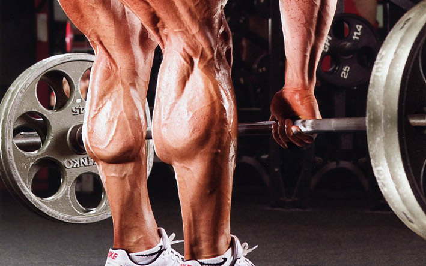
Добре розвинені литкові м’язи надають вашій стійці міцності, і не важливо, гуляєте ви або присідаєте зі штангою. Ікроніжні необхідно розвивати для приросту вибухових рухів з важкими вагами в присіданнях, тягах та інших вправах з обтяженням. Гармонійно розвинені литкові м’язи здатні надати вашим ногам додаткову привабливість і ще раз наголосити на їхньому рівні розвитку.
Завжди консультуйтеся з кваліфікованим лікарем перед початком будь-якої дієти чи програми вправ. Контент на сайті призначений виключно для інформаційних та освітніх цілей та не може розглядатися як медична рада або замінити консультацію кваліфікованого лікаря.
Джерело